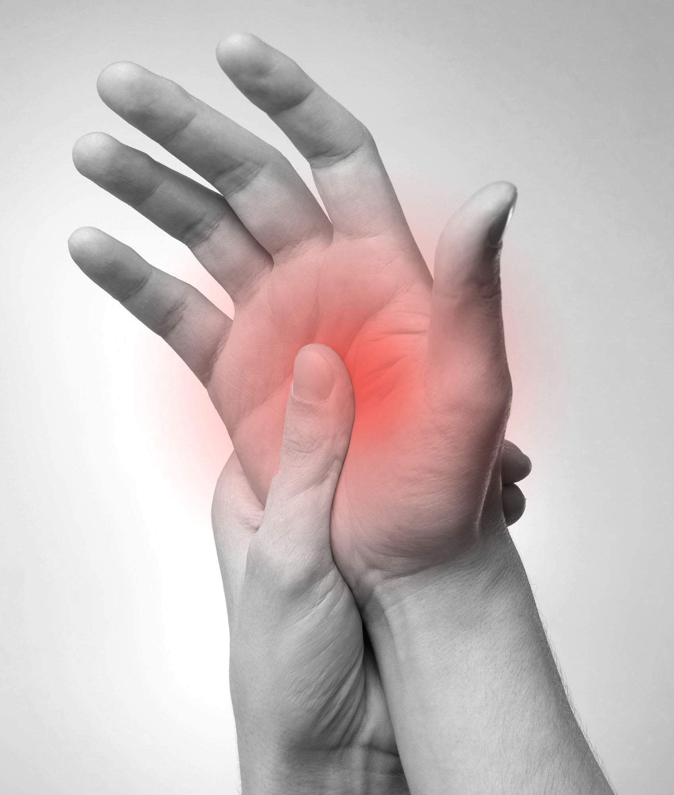

Som udgangspunkt er du som lønmodtager i Danmark omfattet af arbejdsmiljøloven. Ergonomi bygger på arbejdsfysiologien, som er læren om, hvordan kroppen fungerer under arbejde. Og på biomekanikken, som bruges til at analysere belastninger af
muskler og led.
Ergonomi på din arbejdsplads
De grundlæggende ergonomiske principper gælder for alle. Men der er forskel på, hvordan man konkret arbejder med ergonomi i forskellige brancher. Find din branche her, og få information og råd, der passer til netop dig og dine kolleger.
Ergonomi på kontoret
Mange kontoransatte døjer med smerter i skuldre, nakke, arme og hænder. Det kan der gøres noget ved! Løsningen er mere bevægelse og fysisk aktivitet i hverdagen.
Painix
Get rid of the pain in the neck!
Get a divorce!
Tag kroppen med på kontoret
Mange kontoransatte døjer med smerter i skuldre, nakke, arme og hænder. Det kan der gøres noget ved! Løsningen er mere bevægelse og fysisk aktivitet i hverdagen. Kroppen er skabt til bevægelse ikke til stillesiddende skærmarbejde. Vi ved det
godt - men alligevel er de fleste af os alt for dårlige til at skabe bevægelse og variation i det daglige arbejde på kontoret.
Læs på disse sider, hvordan du kommer væk fra skrivebordet og får mere bevægelse i hverdagen. Læs også om symptomer på nedslidning og hvorfor ergonomisk indretning ikke er nok.
Symptomer, som du bør reagere på:
Rygsmerter

Hænder og led
Albuer og arme
Nakke og skuldre
Hvad er arbejdsmiljø?
Arbejdsmiljø er et samspil af de relationer, påvirkninger og vilkår, som mennesket arbejder under.
Det er også den tekniske og sociale udvikling af arbejdspladsen, som kan bidrage til det enkelte menneskes sikkerhed på kort sigt samt til menneskets fysiske og psykiske sundhed på længere sigt.
Arbejdsvilkår skal tilpasses den enkelte.
Arbejdsvilkårene kan give påvirkninger, der for nogle mennesker kan være belastende og for andre stimulerende.
Det er derfor nødvendigt at tilrettelægge arbejdsvilkårene således, at vilkårene er tilpasset det enkelte menneskes forudsætninger og kan give mennesket mulighed for at have indflydelse på sin arbejdssituation.
Sikkerhed og sundhed
Arbejdsmiljølovgivningen beskriver det således, at arbejdet skal kunne udføres sikkerheds- og sundhedsmæssigt fuldt forsvarligt.
Arbejdsvilkår skal tilpasses den enkelte
Arbejdsmiljølovens § 1 slår da også fast, at der ved loven tilstræbes at skabe:
Et sikkert og sundt arbejdsmiljø, der til enhver tid er i overensstemmelse med den tekniske og sociale udvikling i samfundet, samt: Grundlag for, at virksomhederne selv kan løse sikkerheds- og sundhedsspørgsmål med vejledning fra arbejdsmarkedets
organisationer og vejledning og kontrol fra Arbejdstilsynet.
Et bredere arbejdsmiljøbegreb
Oprindeligt lå hovedvægten i arbejdsmiljøet på sikkerhed. Arbejdsmiljø blev defineret som røg, støj og møg-påvirkninger samt risiko for arbejdsulykker.
Med tiden er arbejdsmiljøbegrebet blevet udvidet til også at omfatte påvirkninger, der på længere sigt kan give helbredsskader.
Den biopsykosociale model
I de senere år har man udvidet forståelsen af risikofaktorer i den såkaldte biopsykosociale model. Her ser man på samspillet mellem biologiske, psykologiske og sociale faktorer, der gensidigt kan påvirke og forstærke hinanden i stedet for
at se på risikofaktorerne isoleret.